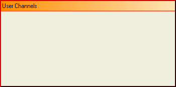
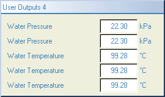

The KineticaRT Frame control provides a frame (panel) in which you can place other controls.
Its main purpose is to separate areas of the screen. For example the values from engine sensors could be placed a frame with the title "Engine" and the values from gearbox sensors placed in a frame with the title "Gearbox". This has the advantage that individual channels can have shorter descriptions making the display neater.
It can also be used to set up a group of controls which can then be copied and reused elsewhere on the screen. The whole group can then be copied, resized etc by copying and resizing just the frame containing them.
The contents of the frame can optionally be saved in a panel file allowing the same frame to be used on several windows or tabs. Updating one copy will then update all the other copies (after a reload).
The frame has exactly the same editing and configuration options as the tabs (panels).
It has the following features:

The KineticaRT Frame does not show any live values so can not be connected to any channels.